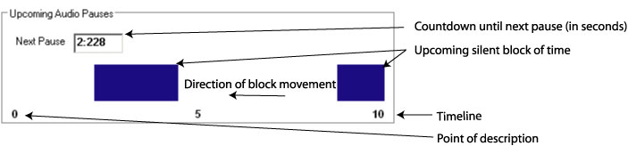

3.1 Introduction to Video Description
The general purpose of describing in this context is to enable viewers who are vision-impaired to follow the program and make sense of the material presented. This purpose is accomplished by conveying verbally essential information that the program conveys visually.
How you serve this general purpose is influenced by the type (e.g., entertainment, information, education, or demonstration). (Why have the majority of viewers tuned in to this program?) and purpose(s) of the particular work.
Following are guidelines to follow when describing video:
- Understand the type and purpose(s) of the video. So you can determine what visually conveyed information is germane to that purpose, and what’s not germane.
- Understand the material presented. So you can make sense of what you see, and convey that sense to the learner.
- Understand what someone who can’t see needs to know to follow the program and make sense of the material presented. So you can determine what needs to be conveyed, and what doesn’t—because it’s apparent from the audio, or because it’s not helpful (enough).
- Observe closely and accurately.
- Speak simply, clearly and concisely. So what you say is easy to understand the first time it’s heard.
- Respect the audio. Description is intended to complement the audio, not compete with it and create confusion.
- Be an objective and positive observer. Your purpose is not to convey your personal feelings about the program or to point out what you perceive to be its shortcomings.
- Disappear. Good description directs attention to the presentation, not to itself.
3.1.1 Real-Time Online Video Description
Access to video content (on-line and television) for people who are low vision or blind has only recently received considerable attention. The demand for this technology is growing as the low vision community becomes a stronger advocate for access to digital technologies and legislation is put in place to meet those demands. Television and film are important cultural experiences that help to shape and define society. Being able to share and participate in these experiences on an equal level is a crucial element in providing social and cultural accessibility for people with disabilities.
Video description (DVS), used by people with low vision to access television and digital video content is a relatively new technology. It provides spoken descriptions of the visual content (costumes, settings, facial expressions, action, etc.) of the video interjected in the audio pauses of the original soundtrack (CRTC, 2004). These descriptions may not be synchronized with the occurrence of the visual information due to the timing and availability of the audio pauses (e.g., the description may occur sometime before or after the visual information is presented). It is slowly becoming a more accepted and standard practice in the broadcast industry. Broadcasters are particularly concerned with the increased expense and timelines to air required to broadcast media adhering to new mandatory DVS requirements of regulatory agencies such as the FCC and CRTC (FCC reference, CRTC, 2004).
Using the SAP channel on stereo televisions, major television outlets in the US are required to provide 50 hours of video description per quarter (Crawford, 2003), and only recently, in Canada, provision of video description is a condition of the licensing agreement (broadcasters operating in large markets are required to provide 2 hours per week of described video description for priority programming) (CRTC, 2004).
The standard practice for adding video description is to outsource the finished production product to specialty service providers. The quality of the resulting work is often lacking in several respects. First, describers have no first hand knowledge of the original intentions of the writers, directors, and actors. As a consequence they will make a series of choices that will affect the viewer’s understanding of the original content. For the describer, knowing what to describe from a rich visual scene is crucial to communicating a general understanding of the story and its more subtle underpinnings. In addition, descriptive video is especially challenging when there is not enough silent space in the audio track to convey what is taking place on the screen.
The process of post-production video description is similar to a production process of the video content itself—a script is written, a narrator is hired and the video descriptions produced and edited (Office of Communication, 2004). This process can be very time consuming and expensive. The outcomes are not necessarily optimal because of the choices that were made during the process and the lack of sufficient audio pauses in the original content. There is, however, no standard process for and very few examples of real-time DVS for live broadcasts or webcasts (Media Access Group, 2004). Real-time video description for broadcast television is essentially non-existent.
Video description of on-line content is produced using a post-production model. However, there is very little of it available on-line and only limited presence in guideline and recommendation documents. The Web Content Accessibility Guidelines (WCAG) guidelines do recommend having video description for on-line video content (WAI, 2003). However, it appears that considerations are being made to move this from checkpoint 1.2 to a best practices section due to the popularity of webcams, and live webcasts. This move seems to point to the difficulty and lack of process for providing live DVS.
The benefits of DVS for users have been detailed in recent studies (Schmeidler & Kirchner, 2001). They showed that DVS significantly improves a person’s comprehension of the video content, particularly when information is presented visually with no accompanying dialogue or explanation (e.g., nature programs). Other benefits highlighted in these studies include: being more comfortable speaking with sighted people about the same program, not having to rely on informal descriptions provided by friends or family, and participating in shared cultural experiences on a more equal level. However, these results have been studied for DVS content that has been carefully crafted and produced, and is error free.
Live DVS for theatre performance (Weeks, 2002) and play-by-play commentary for live sporting events. The process for theatre description involves using a well-trained volunteer describer. This individual will spend time preparing before the performance by attending dress rehearsals or early performances, and reading the script. The process for play-by-play commentary involves describing what is happening in the sporting event as it is happening. The sportscaster must have detailed knowledge of the game in order to produce accurate commentary. This type of real-time commentary does not often provide what someone or something looks like but rather describes the action.
Description of the actual performance often involves an audio preview for listeners just prior to the beginning of the performance. Strict rules regarding what describers are allowed to describe are followed. For example, describers are trained to provide “objective” descriptions and avoid opinions or interpretations of the performance (the use of emotive words such as joy, or sadness tends to be limited). Training for this process involves approximately a five day intensive workshop (Audio Description Associates, 2004). The Audio Description Associates (2004) report that a sense of timing concentration and observation are very important skills for all DVS describers so that they can provide adequate descriptions in the time available.
Live description is prone to higher error rates than post-production description due to the fact that it is delivered live and cannot be reviewed or edited. However, there is little research on rates of error for theatre describers (or what constitutes adequate description), and acceptance ratings on the DVS quality by people who are blind or low vision. Real-time captioning produced for people who are deaf or hard of hearing may provide some insight into possible error rates and user quality expectations. Service providers claim to provide high accuracy rates (e.g., NCI claims a 98% accuracy rate; NCI, 2004), and there are speed and accuracy performance requirements specified in training regimes for real-time captioners (see Media Access Group, 2003 as an example). However, real-time captioning is a very different process than DVS as it is a typed verbatim reproduction of spoken dialogue (Clark, 2003). DVS is an interpretation and synthesis of visual information into spoken form requiring different and potentially more involved cognitive processes.
We present an innovative technology, LiveDescribe, that has been developed to allow a single individual to analyze content and provide video description in near real-time.
3.1.2 System Description
LiveDescribe has been designed to allow near real-time video description for broadcast or web content. This process requires a different approach to video description than the conventional processes because a describer will not have time to prepare a script or even preview much of the material ahead of time. New tools are required to facilitate this type of video description that involves detection and presentation of non-dialog, low volume occurrences in the sound track and to allow the description to extend beyond the limits of those occurrences. Extending the limits must be under describer control and have minimal effect on the video presentation.
The LiveDescribe! system thus performs two main functions:
- notifies the describer of upcoming silent or low volume occurrences and of the length of time of those occurrences in the video. These occurrences offer an opportunity for inserting a description in real time. In LiveDescribe! silent or low volume occurrences are presented as a series of blocks (indicated in blue) on a white timeline that plays along with the video material (see Figure 17).
- automatically pauses the video (extending its running length) to accommodate descriptions that exceed the available silence period. To accommodate descriptions longer than the detected silent periods, the system pauses the broadcasted video so that the describer can finish her/his description. Professional video describers have noted the importance of this feature to provide further and richer descriptions. It also allows describers to be less accurate with the timing of the description and the silence periods, particularly important when there is little or no planning process as in the live description situation. However, video extension cannot be implemented when video is constrained by external time demands such as with television programs.

Figure 17: Silence indicators that move horizontally as the video progresses
We predict that the task of describing live will impose a high cognitive demand on the video describer. The video describer must attend to two important main activities: 1) the occurrence and length of silence or low volume, non-dialog periods indicated by the silence period indicator; and 2) the content that must be described. The describer must decide what is important to describe, determine the best or most appropriate aspects of a scene to describe, and then insert the description. All of these tasks must be accomplished as the video content is playing. Describers may have only a few seconds to a few minutes of dialog time to prepare for describing in the silence periods. Research must be carried out to determine how many silence periods can be used and at what frequency they can occur before the describer cannot cope or makes too many errors.
System ease of use is critical in supporting these describer activities because of the high cognitive load imposed by the two main describing activities. We want to minimize any additional cognitive load imposed by the system’s user interface. The system is thus designed using the concept of a single push button microphone giving describer the ability to control the entire process through one button. The button is pressed once to start the broadcasting of the describer’s voice and then pressed again (released) to stop the broadcast (see Figure 18).

Figure 18: Describer control and status indicators.
During broadcasting of the describer’s voice, the system monitors the sound level in the source video. If there is sound and the describer has not stopped the description, the source video is automatically paused by inserting frames in it and extended description can continue. Once the describer stops his description, the video continues from the point where frames were inserted. Visually these events appear as a video pause which may be disconcerting for a sighted viewer. Again, research is required to determine the tolerance levels of vision impaired and sighted user pairs for this type of video behaviour.
3.1.3 Procedure for describing a live stream
The procedure for describing a live broadcast or web stream involves three main steps. First, the describer must first define the video source. The video source is displayed in a separate window that occupies much of the main user interface area (see Figure 19). Currently the system can only work with digital media, specifically in Apple QuickTime format. Once displayed, there is a delay while the system looks ahead and analyzes the upcoming portion of the video for silent periods. The amount of look ahead time is defined by the describer and we estimate that this would typically be within the range of 10 to 60 seconds.
For example, if the describer wishes to see the silent periods for the next 30 seconds, the system will delay the processing time by 30 seconds. The describer must wait for 30 seconds before beginning the description process and the video broadcast will be delayed by 30 seconds as well. This short delay means that the system is actually near real-time because of the delay introduced by this “look ahead” time. However, it provides the describer with at least 30 seconds of advanced notice of and opportunity for preparation for upcoming silence periods. Whether or not this is enough preparation time depends on the visual complexity of the content and describer knowledge of the content style. For example, if this is a live sporting event, the describer may have experience with describing that sport as well as advanced knowledge of the sport itself such as the rules, team colours, players, and venue appearance reducing the potential preparation time required for producing appropriate descriptions.
The second step involves determining which silence periods will be used for description. Below the video area in the interface LiveDescribe! is the timeline that shows the time and the length of the upcoming audio pauses. These pauses are indicated as blue rectangular bars. The width of each bar indicates the length of time of the silence or low volume, non-dialog period. A countdown timer is provided to show the describer exactly how many seconds are remaining before the next silence period (see Figure 19).
The next step is for a describer to insert and broadcast descriptions with the video material. The describer accomplishes this task by “pressing” the Describe button. As seen in Figure 19, this button is located below the timeline. Status indicators are located beside this button to provide feedback to the describer on which description process is active. When the describer clicks on the button to broadcast a description, the “Describing” status light appears to show the system’s current state. When the button is clicked again, the light disappears indicating that the describer’s voice is no longer being broadcast. The “Extending” status light appears when the describer continues to describe into a non-silent part of the video. In this case, the system is still broadcasting the description with the original source video paused. When the button is clicked again, the light disappears, the describers voice is no longer broadcast, and the video continues to play.
Figure 19: Describer interface.
There is publish option located below the description controls. This option will allow the user to save a copy of the newly described video including the video extensions.
There are two counters located at the bottom of the screen to provide a general overview of movie status. These indicators show how much of the video has elapsed, and the new length of the video due to any extensions.
3.1.4 Preferences
It is important to provide describers with control over their environment particularly when the task of real-time describing can be so intensive. As is shown in Figure 20, the describer can modify the following viewing and analyzing options: 1) amount of time LiveDescribe! will “look ahead” and analyze the silence periods in the video; 2) the volume threshold; 3) the accuracy level; 4) the pause length; and 5) the auto extend.
The “look ahead” time is defined as the amount of the video (in seconds) and the corresponding silence periods that the system must detect, analyse and display for the describer. The longer the “look ahead” time, the less real-time the system becomes. However, it also provides the describer with some preparation time. The describer must therefore balance preparation time with the need for timeliness. The maximum “look ahead” time is equal to the entire length of the pre-processed video.
The volume threshold option defines the level of sound (in decibels) in the video that is considered “silence”. The higher the threshold option, the fewer silence spaces will be found. If the volume threshold is too low, the system may offer silent periods that contain low volume speech (e.g., whispers). While this is one simple method for detecting and displaying the “silence” portions of the sound, there is no guarantee of excluding competing dialog depending on the threshold set. Further research is required to develop algorithms that detect the presence or absence of speech (rather than only volume levels). This would ensure that description is not provided over content dialog.
The accuracy setting (in percentage) defines the level of volume variation allowed within a silent period. For example, if the system has detected a pause and then there is a short-duration cough, or a door closing during the silent period, the describer can set the accuracy setting below 100% so that the system will ignore lower volume, short duration sounds and report the entire segment as silent.
Figure 20: Preferences screen.
The pause length (in seconds) defines the minimum length of time considered as a pause. If the length is set to two seconds, the system will only show pauses that are longer than two seconds, ignoring silences periods that are less than two seconds in length.
The auto-extend option allows the extension feature to be activated/deactivated (the extension feature allows the video to be paused if there is description during a non-silent period). If auto-extend is selected the system will automatically extend the video when non-silent periods are detected and the describer is describing. The default position for auto-extend is “on”.
3.1.5 Technical Difficulties
Multimedia files are inherently very large (e.g., video files can easily occupy 30MB per minute of video content). Full screen uncompressed video requires powerful and expensive hardware to manipulate and play. For example, each frame of 640X480 uncompressed full colour video using a resolution of 24 bits per pixel would require 922 KB of disk space. If the video was to be played at a frame rate of 30 frames per second, it would require 221 MB of storage space per second (a 30 second video would occupy approximately 6.6 GB of hard drive space). The difficulties imposed by such a large file requirement are obvious. Large multimedia files require a significant amount of memory and processing power. Even compressed video files can be very large. Algorithms designed to manipulate these large files must be specially designed to accommodate them. For example, traditional backup procedures, such as those seen in sophisticated word processing packages, cannot be used as copying a 6.6 GB file would require a significant amount of system time and likely interfere with other processing.
This issue becomes even more significant when dealing with a time sensitive operations such as describing a live video stream. Any live descriptive system must at least keep up with the minimum demands of broadcasting a continuous stream of video. A viewing audience would not be forgiving of a video stream that is fragmented or distorted due to computer processing constraints of large files.
Bandwidth and network traffic is another difficulty associated with the high demands of multimedia data. For a technology such as live description to be successful, users must have access to a network delivery system capable of distributing high quality audio and video. The television medium would not be appropriate since live description as described here would require an extension of the programs over time, a requirement obviously not possible in television. The next most appropriate medium would be the Internet. It is possible using existing network technology to deliver broadcast quality video to a wide audience. However the technology is expensive and not widely available to mass consumer markets. The high-speed networks required for multimedia content delivery are currently limited to large cities where high population density warrants the installation of these networks. Users in rural settings with little or no Internet access would be excluded.
There are some technical solutions to better management of large multimedia files. These include:
- dividing large files into smaller, more manageable chunks of data. This chunking could significantly reduce the processing requirements of the data, but would of course use additional system resources to divide and then reassemble the data chunks.
- using sophisticated data compression methods to reduce the file size. Advances in QuickTime and MPEG technologies are very promising in this area. However, data is still lost and we need more research to determine whether this is acceptable to viewers.
- using “bigger and better” hardware is probably the most effective and direct way to address with the problems associated with large multimedia files. However, it is a very expensive option that will always be in the future.
Traditional video descriptions are currently performed within the controlled environment of a recording studio. This type of environment is best suited for obtaining the highest quality recording of the describers voice as it is a permanent facility dedicated to recording high quality audio. Recording studios have access to high quality microphone and recording technology. For LiveDescribe! it is envisioned that the describer could work alone and perhaps even from home or a broadcast studio without the benefit of a traditional recording studio. Many broadcast and home-based centres are not equipped to produce audio content (just as many recording studios are not setup up for Internet broadcasting). These equipment differences can lead to a noticeable decrease in the overall quality of the audio production including the describer’s voice, and room noise as less sophisticated recording equipment and space would be available. Microphones and soundcards available in most computer systems do not meet broadcast quality audio standards and could not be used for broadcast quality describing. Again, research is required to determine audio recording standards that would be acceptable to viewers in a live description situation.
3.2 Discussion and Recommendations
There are currently no standards of practice or even many examples of live description for television or for the digital media. Much more experience and research is required in order to make adequate and comprehensive recommendations and best practice guidelines. However, we have made many observations and identified key areas for further work.
Similar to live captioning, we predict that live description will be more error prone than content described after production. With post production description, content is carefully reviewed, and scripts and describers are prepared in advance. Experts in the description process and a CNICE partner evaluated LiveDescribe! and suggest that “With description you have to first understand what you are seeing, then determine if this is relevant to what this program is about, and if it is important to the audience understanding it. Then finally it all has to be put into words” (Rosen, 2004). The evaluators suggest that some preparation is required even for live description. This preparation could take the form of production scripts and/or a priori knowledge of the subject matter. For example, a describer could have knowledgeable about a particular sport. It may then be much more feasible for that person to provide relatively effective descriptions than a person who knows nothing about it.
In LiveDescribe!, there is no opportunity for review, writing scripts or correction in a live description situation so any preparation must be carried out before the actual event occurs, similar to how theatre description is accomplished. One important challenge in designing live description processes and tools involves determining the quantity and types of errors (e.g., omission, mis-descriptions) produced by describers for a variety of live events and timeframes, and the level and quantity of errors that would be acceptable to viewers. It would also be important to determine the level of cognitive load and fatigue rates imposed by the live description process and the LiveDescribe! tools.
Unlike closed captioning, quantifying and qualifying errors contained in a video description is a difficult and subjective task. It involves subjective judgments on whether the description of a particular scene or series of events provides a sufficiently accurate and complete “picture” to users of the visual information. For closed captioning, errors can be readily identified by incorrect spelling, missing words, or words incorrectly matched to the dialogue of the show. However, determining whether a description is correct or sufficient involves a personal judgment.
Guidelines developed for post production as seen in the section on providing description for Internet Programming in the main document point to several quality guidelines. They also point to the difficulty describers have in providing descriptions in real-time of unfamiliar content. However, there is much more research to be carried out to determine quality and quantity limitations, levels of subject knowledge and content familiarity that is required in order to successfully achieve live description, and the cognitive load imposed by live describing tasks.
In conclusion, we have developed a tool to allow descriptions to be generated for near live video description and carried out limited evaluation. Allowing describers to extend descriptions beyond the identified silence period and recommending describers have some content knowledge a priori makes live video description a possible reality. There is still considerable research required to determine acceptable quality parameters, efficient methods for describers and ways to reduce the high cognitive load and possible high fatigue rates imposed on describers by live description tasks.
ACKNOWLEDGMENTS
We thank the National Broadcast Reader Service (NBRS) for all of their assistance in this project. Funding for this project is provided by Canadian Heritage. The authors also wish to gratefully acknowledge the University of Toronto and Ryerson University.
We acknowledge the financial support of the Department of Canadian Heritage through the Canadian Culture Online Program